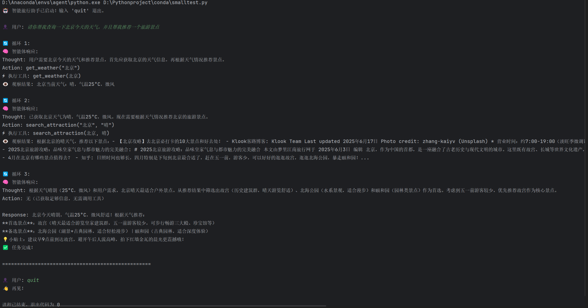

调用大模型
可以通过HTTP调用网络大模型的API（有钱），也可以本地部署大模型，通过Ollama，默认本地运行在http://localhost:11434/v1中
代码详解
库
所需要安装的库tavily-python、openai
tavily：Tavily 是一个专为大型语言模型（LLM）和 AI 智能体（AI Agents）设计的搜索引擎 API。它返回的是一个干净、简洁、结构化的 JSON 对象，其中包含了问题的直接答案、关键信息点和来源链接。
openai：是 OpenAI 官方提供的 Python 软件开发工具包 (SDK)。它的核心作用是让开发者能够用简单、符合 Python 编程习惯的方式，来调用 OpenAI 提供的各种先进的人工智能模型服务。它不仅能调用openai的各种模型，而且支持所有符合openai库的调用格式的模型，只需更改 base_url即可。
系统提示 System Prompt
系统提示（System Prompt）是智能体的"DNA"，它定义了智能体的身份、能力和行为模式。一个好的系统提示应该清晰地说明智能体的角色、可用工具以及输出格式。
AGENT_SYSTEM_PROMPT = """
你是一个智能旅行助手，能够帮助用户规划旅行并提供相关信息。
你有以下工具可以使用：
1.get_weather(city)：获取指定城市的天气信息
2.search_attraction(city, weather)：根据城市和天气搜索适合的旅游景点
请按照以下格式回复：
Thought:[你的思考过程]
Action:[要执行的动作，格式为函数调用]
如果不需要使用工具，请直接回复用户。
"""
实现工具函数
接下来，我们需要实现智能体可以调用的工具函数。这些函数是智能体与外部世界交互的桥梁。
天气查询工具
def get_weather(city):
# 这里使用模拟数据代替实际API调用
weather_data = {
"北京": {"temperature": 25, "condition": "晴", "wind": "微风"},
"上海": {"temperature": 28, "condition": "多云", "wind": "东南风"},
"广州": {"temperature": 32, "condition": "雷阵雨", "wind": "南风"},
"深圳": {"temperature": 30, "condition": "阴", "wind": "无风"}
}
if city in weather_data:
data = weather_data[city]
return f"{city}的天气是{data['condition']}，温度{data['temperature']}°C，风力{data['wind']}。"
else:
return f"抱歉，无法获取{city}的天气信息。"
景点搜索工具
# 景点搜索工具
from tavily import TavilyClient
def search_attraction(city, weather):
#初始化TavilyClient, api_key请替换为实际API密钥
try:
tavily = TavilyClient(api_key="your_api_key")
# 构建查询，就是prompt
query = f"请推荐适合在{city}游玩的景点，当前天气情况是：{weather}。"
# 执行查询搜索
response = tavily.search(query=query, max_results=3)
# 处理搜索结果
attractions = []
for result in response.get("results", []):
attractions.append({
'title': result.get('title', ''),
'content': result.get('content', '')[:200] + '...'
})
# 返回格式化的景点信息
return f"根据{city}的{weather}天气，推荐以下景点：" + "\n".join([f"- {attr['title']}: {attr['content']}" for attr in attractions])
except Exception as e:
return f"抱歉，搜索景点时出现错误{str(e)}"
for result in response.get("results", []):
attractions.append({
'title': result.get('title', ''),
'content': result.get('content', '')[:200] + '...'
})
for...in...是一个基本的循环，result是新赋的变量名，代表response中的每一个元素。response.get("results", [])：response是一个字典，.get("results", [])方法可以取出以results为key的value，返回一个像[results1, results2, results3]这样的列表。attractions.append(...)：attractions为先前创建的列表，results也是一个字典，其中包含keytitle、content、...，取出这两个内容，若没有则用''代替，加入列表attractions中- 如下这一个示例
{
"results": [
{ "title": "卢浮宫", "content": "卢浮宫是世界上最著名的博物馆之一...", "url": "..." },
{ "title": "埃菲尔铁塔", "content": "埃菲尔铁塔是巴黎的标志性建筑...", "url": "..." }
]
}做完这一步骤后得到的attraction = [{"title": "卢浮宫", "content": "卢浮宫是世界上最著名的博物馆之一..."}, { "title": "埃菲尔铁塔", "content": "埃菲尔铁塔是巴黎的标志性建筑..."}]
注册工具
available_tools = {
"get_weather": get_weather,
"search_attraction": search_attraction
}
实现智能体核心逻辑
现在我们来实现智能体的核心逻辑，包括与LLM的交互和工具调用的解析。
# 实现智能体核心逻辑
from openai import OpenAI
import re
class MySmallCilent:
def __init__(self):
self.client = OpenAI(
api_key="ollama",
base_url="http://localhost:11434/v1"
)
def chat_completion(self, messages, model="qwen3-4b"):
# 调用本地 llm 进行对话
try:
response = self.client.chat.completions.create(
model=model,
messages=messages,
temperature=0.7,
max_tokens=1000
)
return response[0].message.content # 返回生成的内容
except Exception as e:
return f"调用本地模型时出现错误: {str(e)}"
def parse_action(self, response):
"""解析LLM响应中的Action"""
# 使用正则表达式提取Action
action_pattern = r'Action:\s*([a-zA-Z_]+)\((.*?)\)'
match = re.search(action_pattern, response)
if match:
function_name = match.group(1)
# 简单解析参数（实际应用中需要更robust的解析）
params_str = match.group(2).strip('"\'')
params = [p.strip().strip('"\'') for p in params_str.split(',') if p.strip()]
return function_name, params
return None, None
response = self.client.chat.completions.create()：client：表示之前指定的llm模型chat：表示与聊天模型相关completion：这是一项具体服务，代表补全。我们希望模型通过提供下一句话来"补全（complete）"我们的对话。create：代表动作创建
parse_action(self, response)函数是关键部分，它负责阅读模型返回的"思考报告"，并从中找出可执行的命令。- 如我们的模型被训练成会按照一个特定的格式输出，如
Action: search_attraction("巴黎", "晴天") action_pattern = r'Action: ...': 这定义了一个"文本搜索模板"（专业术语叫正则表达式）。这个模板专门用来寻找形如Action: 函数名(参数1, 参数2)这样的文字。Action:: 寻找开头的 "Action:"([a-zA-Z_]+): 寻找并捕获一个由字母和下划线组成的函数名。\((.*?)\): 寻找并捕获括号内的所有内容（也就是参数）。
- 如我们的模型被训练成会按照一个特定的格式输出，如
match = re.search(action_pattern, response)：执行搜索，模版匹配，若找到了符合条件的对象，则会返回一个match对象，里面包含了匹配的结果。params = [p.strip().strip('"\'') for p in params_str.split(',') if p.strip()]- 这是对参数字符串进行清洗和格式化，因为此时它还只是一个长字符串，我们需要把它变成一个干净的 Python 列表 ，例如
['巴黎', '下雨天']。 params_str.split(','): 按逗号分割字符串，得到一个列表['"巴黎"', ' "下雨天"']。注意，此时列表里还有多余的空格和引号。[... for p in ... if p.strip()]: 这是一个列表推导式，对分割后的列表进行遍历和清洗。for p in ...: 依次处理列表中的每个元素p。if p.strip(): 一个安全检查，如果某个元素是空的或者只包含空格，就忽略它。p.strip().strip('"\''): 这是清洗的核心。p.strip()先去掉元素两边的多余空格（' "下雨天"'->'"下雨天"'），然后.strip('"\'')再去掉两边的引号（'"下雨天"'->'下雨天'）。
- 最后，
params就成了一个干净的列表：['巴黎', '下雨天']。
- 这是对参数字符串进行清洗和格式化，因为此时它还只是一个长字符串，我们需要把它变成一个干净的 Python 列表 ，例如
主执行循环
def run_agent():
# 初始化客户端
client = MySmallCilent()
# 初始化对话消息
messages = [{"role": "system", "content": AGENT_SYSTEM_PROMPT}]
print("🤖 智能旅行助手已启动！输入 'quit' 退出。\n")
while True:
user_input = input("👤 用户: ").strip() # 获取用户输入,去除多余空格
if user_input == "quit":
print("🤖 智能旅行助手已退出。")
break
# 添加用户消息到历史
messages.append({"role": "user", "content": user_input})
# 开始智能体循环
max_iterations = 5
for iteration in range(max_iterations):
print(f"\n🔄 循环 {iteration + 1}:")
# 1.思考阶段，调用LLM
response = client.chat_completion(messages) # 获取LLM响应
print(f"🧠 智能体响应:\n{response}")
# 2.解析Action
function_name, params = client.parse_action(response)
if function_name and function_name in available_tools:
# 3.执行工具
print (f"⚙️ 执行工具: {function_name}({', '.join(params)})")
try:
tool_result = available_tools[function_name](*params)
observation = f"Observation: {tool_result}"
print(f"👁️ 观察结果: {tool_result}")
# 4.将观察结果添加到消息历史
messages.append({"role": "assistant", "content": response})
messages.append({"role": "user", "content": observation})
except Exception as e:
error_msg = f"Observation: 工具执行出错 - {str(e)}"
print(f"❌ 工具执行错误: {str(e)}")
messages.append({"role": "assistant", "content": response})
messages.append({"role": "user", "content": error_msg})
else:
# 没有工具需要执行，直接回复用户
messages.append({"role": "assistant", "content": response})
print("✅ 任务完成！")
break
主函数
if __name__ == "__main__":
run_agent()实现效果
